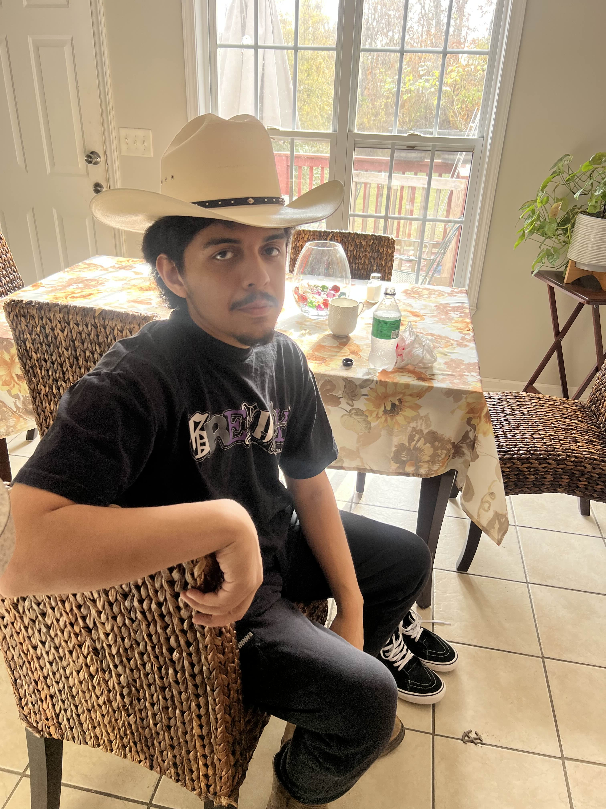

Kevin Rivas's Kind Rat || ITIS 3135
Introduction: Kevin Ibarra Rivas

Photo of me sitting on chair
- Personal Background: I was born and raised in Charlotte and I decided to come here due to the close proximity and its tuition.
- Professional Background: I have done an internship program for the mayor involving Bank of America and developing a new app to help customers.
- Academic Background: I am a Computer science major focusing on Cyber Security and with a minor in American Studies.
- Primary Computer Platform: Mac OS and windows
- Courses I'm Taking & Why:
- ITIS 3135: Web-based Application Design and Development: Requirement for my concentration.
- ITIS 3200: Introduction to Information Security and Privacy: Requirement for the concentration.
- ITSC 2175: Logic and Algorithms : Requirement for the major
- ITSC 2181: Introduction to Computer Systems: Requirement for the major.